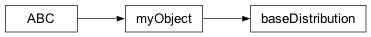

GeoBIPy
1.0.0
Getting Started
API
Core routines needed for GeoBIPy
Classes used in GeoBIPy
Core classes
Data classes
Mesh classes
Model classes
Pointcloud classes
Statistics classes
Distribution Wrapper
Histogram
baseDistribution
Normal distribution
MvNormal
Uniform distribution
Gamma Distribution
Order Statistics
System classes
Examples
GeoBIPy
API
Classes used in GeoBIPy
Statistics classes
baseDistribution
View page source
baseDistribution

class
geobipy.src.classes.statistics.baseDistribution.
baseDistribution
(
prng
)
Define an abstract base distribution class
bins
(
)
Place Holder for children
deepcopy
(
)
Place holder for children
property
moment
Place Holder for children
property
ndim
Place Holder for children